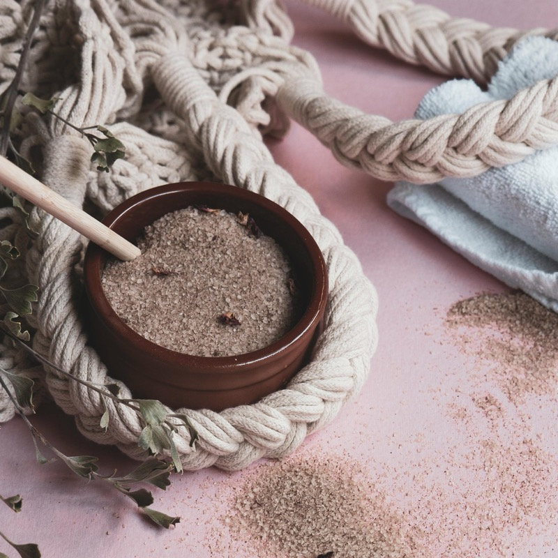

خدماتنا الطبية الشاملة
اكتشف مجموعة واسعة من خدمات الرعاية الصحية المصممة لتلبية احتياجات عائلتك. نحن نجمع بين الطب التقليدي والأساليب الشمولية لتوفير رعاية شخصية وفعالة.
طب الأسرة
رعاية صحية شاملة للأسرة مع متابعة طبية شخصية والوقاية وعلاقات موثوقة لجميع الأعمار. نحن نؤمن ببناء علاقات طويلة الأمد مع عائلاتنا لفهم تاريخهم الصحي وتقديم رعاية مستمرة ومنسقة.
منهجنا
في عيادة الأسرة، نتبع نهجاً شاملاً لطب الأسرة يركز على الوقاية والتشخيص المبكر والعلاج الشخصي. نحن نعتبر كل عائلة وحدة متماسكة ونعمل على بناء علاقات ثقة طويلة الأمد.
خدماتنا
- فحوصات دورية شاملة لجميع أفراد الأسرة
- تطعيمات وقائية للأطفال والبالغين
- إدارة الأمراض المزمنة (السكري، ضغط الدم، الكوليسترول)
- فحوصات صحية سنوية ومتابعة طبية
- رعاية صحة المرأة والاستشارات النسائية
- رعاية طب الأطفال والمراهقين
- رعاية كبار السن والشيخوخة الصحية
- إدارة الألم الحاد والمزمن
- استشارات التغذية وإدارة الوزن
- التنسيق مع المتخصصين والإحالات الطبية
لماذا تختارنا
فريقنا ذو الخبرة يقدم رعاية شاملة ومنسقة لجميع أفراد الأسرة. نحن نؤمن بالطب الوقائي ونعمل معكم لوضع خطط صحية شخصية تلبي احتياجاتكم الفريدة. استمرارية الرعاية وبناء الثقة هما أساس نهجنا في طب الأسرة.
احجز استشارة طب الأسرةالاستشارات الشمولية
اعتنِ بنفسك بطريقة مختلفة مع نهج صحي شامل يراعي الجسم والعقل والعواطف. استشاراتنا الشمولية تتجاوز الأعراض للبحث في الأسباب الجذرية وتعزيز الشفاء الطبيعي والرفاهية الشاملة.
نهجنا الشمولي
نؤمن أن الصحة الحقيقية تتطلب توازناً بين جميع جوانب الحياة. استشاراتنا الشمولية تدمج الطب التقليدي مع العلاجات الطبيعية والتقنيات الشمولية لمعالجة الشخص ككل، وليس فقط المرض.
عناصر الاستشارة
- تقييم شامل لنمط الحياة والعادات الصحية
- تحليل الحالة الغذائية والتوصيات الغذائية
- إدارة الإجهاد وتقنيات الاسترخاء
- تقييم التوازن الهرموني والطاقة الحيوية
- استشارات الصحة العقلية والرفاهية النفسية
- برامج التخلص من السموم والتطهير
- العلاج بالأعشاب والمكملات الطبيعية
- الرفاهية الروحية والتوازن الداخلي
لماذا تختارنا
نحن نتميز بنهجنا الفردي والشخصي لكل مريض. استشاراتنا الشمولية تستغرق وقتاً كافياً لفهم احتياجاتك الفريدة وتطوير خطة علاج شاملة تعالج الأسباب الجذرية وليس فقط الأعراض. نحن نرافقك في رحلتك نحو الصحة المثلى والرفاهية الشاملة.
احجز استشارة شموليةالمسح الكمي

تقنية طاقة حيوية متقدمة تحلل الاختلالات الداخلية وتوجه الرعاية نحو الفعالية المثلى. المسح الكمي يوفر رؤى عميقة حول الأنماط الطاقية والتضاريس البيولوجية لجسمك لتحديد نقاط الضعف والقوة.
التكنولوجيا المتطورة
نستخدم تقنية المسح الكمي المتطورة لتحليل الترددات الطاقية في جسمك وتحديد الاختلالات قبل ظهور الأعراض الجسدية. هذا النهج الوقائي يساعد في الكشف المبكر عن المشاكل الصحية المحتملة ووضع خطط علاج مخصصة.
ما يوفره المسح
- تحليل شامل للأنظمة الحيوية في الجسم
- تقييم مستويات الطاقة والحيوية
- كشف الاختلالات الهرمونية والغذائية
- تحديد حساسيات الطعام والبيئة
- تقييم حالة الجهاز المناعي
- تحليل مستويات الإجهاد والتوتر
- توصيات مخصصة للعلاج والمكملات
- متابعة التقدم وتقييم فعالية العلاج
لماذا تختارنا
نحن من الرواد في تطبيق تقنية المسح الكمي في المنطقة. فريقنا مدرب على أحدث التقنيات ويتميز بخبرة واسعة في تفسير النتائج ووضع خطط علاج شاملة. نحن نجمع بين التكنولوجيا المتطورة والخبرة الطبية لتوفير رعاية دقيقة وفعالة.
احجز مسحاً كمياًالطب الطبيعي

نهج شفاء طبيعي يركز على قدرات الجسم الفطرية على الشفاء باستخدام العلاجات الطبيعية. الطب الطبيعي يعمل على معالجة الأسباب الجذرية للمرض وتعزيز الصحة الطبيعية والوقاية من خلال أساليب آمنة وفعالة.
فلسفة الشفاء الطبيعي
نؤمن بقدرة الجسم الطبيعية على الشفاء عند توفير البيئة والدعم المناسبين. الطب الطبيعي يركز على تعزيز هذه القدرات باستخدام العلاجات الطبيعية الآمنة والفعالة، مع التركيز على الوقاية والعلاج الشامل.
خدماتنا الطبيعية
- استشارات غذائية وبرامج تغذية علاجية
- العلاج بالأعشاب الطبية والمستخلصات الطبيعية
- برامج التخلص من السموم والتطهير الطبيعي
- العلاج بالمكملات الغذائية الطبيعية
- العلاج بالماء والعلاجات الحرارية
- تقنيات إدارة الإجهاد والاسترخاء الطبيعي
لماذا تختارنا
نحن نتميز بنهجنا الشخصي والشامل في الطب الطبيعي. فريقنا مدرب على أحدث تقنيات الطب الطبيعي ويتمتع بخبرة واسعة في التعامل مع مختلف الحالات الصحية. نحن نعمل معكم لوضع خطة علاج طبيعية مخصصة تناسب احتياجاتكم الفردية ونمط حياتكم.
احجز استشارة طب طبيعيالحجامة

علاج تقليدي بالكؤوس يجمع بين الحكمة القديمة والبروتوكولات الطبية الحديثة لتحسين الصحة. الحجامة تعمل على تحسين الدورة الدموية وتخفيف الألم وتقوية المناعة من خلال تقنيات آمنة ومجربة عبر القرون.
العلاج التقليدي الأصيل
الحجامة هي علاج تقليدي عريق يستخدم الكؤوس لخلق شفط على نقاط محددة من الجسم. هذا العلاج الطبيعي يحفز تدفق الدم ويساعد في إزالة السموم وتحسين وظائف الأعضاء الحيوية، مع التزامنا بأعلى معايير النظافة والسلامة.
الفوائد الصحية
- تحسين الدورة الدموية وتدفق الدم
- تخفيف الألم المزمن والعضلي
- تقوية جهاز المناعة الطبيعي
- إزالة السموم من الجسم
- تقليل الالتهابات والتورم
- تحسين مستويات الطاقة والحيوية
- تخفيف التوتر والإجهاد
- تحسين جودة النوم والراحة
لماذا تختارنا
نحن نقدم خدمات الحجامة وفقاً لأعلى المعايير المهنية والطبية. فريقنا مدرب ومعتمد في تقنيات الحجامة التقليدية والحديثة. نحن نستخدم أدوات معقمة وآمنة ونتبع بروتوكولات صارمة لضمان سلامتكم وراحتكم. كل جلسة مخصصة وفقاً لاحتياجاتكم الصحية الفردية.
احجز جلسة حجامةالعلاج الطبيعي

إعادة تأهيل بدنية شاملة باستخدام تقنيات قائمة على الأدلة لاستعادة الوظيفة وتحسين الرفاهية. العلاج الطبيعي يساعد في استعادة الحركة الطبيعية وتقليل الألم وتحسين جودة الحياة من خلال برامج مخصصة ومدروسة.
إعادة التأهيل المتخصصة
نحن نقدم خدمات العلاج الطبيعي الشاملة باستخدام أحدث التقنيات والأساليب العلاجية. فريقنا من المعالجين الطبيعيين المؤهلين يعمل معكم لوضع برامج علاج مخصصة تهدف إلى استعادة الوظائف الطبيعية وتحسين الأداء البدني.
خدماتنا الشاملة
- تقييم وعلاج اضطرابات الجهاز العضلي الهيكلي
- إعادة تأهيل الإصابات الرياضية
- علاج آلام الظهر والرقبة المزمنة
- إعادة تأهيل ما بعد الجراحة
- العلاج العصبي وإعادة التأهيل
- علاج اضطرابات الحركة والتوازن
- برامج التمارين العلاجية المخصصة
- العلاج الطبيعي لكبار السن
- برامج الوقاية من الإصابات
- التعليم والتدريب على الوضعيات الصحيحة
لماذا تختارنا
نحن نتميز بنهجنا الشامل والشخصي في العلاج الطبيعي. فريقنا مؤهل ومدرب على أحدث تقنيات العلاج الطبيعي ويتمتع بخبرة واسعة في التعامل مع مختلف الحالات. نحن نستخدم أحدث المعدات والأجهزة العلاجية لضمان أفضل النتائج لمرضانا.
احجز جلسة علاج طبيعيطب الجلدية والجراحة التكاملية

رعاية متكاملة للبشرة تجمع بين طب الجلدية الطبي وطرق الشفاء الطبيعية. نحن نقدم حلولاً شاملة لصحة البشرة تراعي الجوانب الطبية والجمالية والصحية العامة لتحقيق بشرة صحية ومشرقة.
النهج التكاملي
نحن نتبع نهجاً تكاملياً في طب الجلدية يجمع بين التشخيص الطبي الدقيق والعلاجات الطبيعية الآمنة. هذا النهج يساعد في معالجة مشاكل البشرة من الجذور وتعزيز الصحة العامة للبشرة على المدى الطويل.
خدماتنا الجلدية
- تشخيص وعلاج الأمراض الجلدية العامة
- علاج حب الشباب والندبات
- علاج الأكزيما والصدفية
- فحص الشامات والوقاية من سرطان الجلد
- علاج الحساسية الجلدية
- العلاجات التجميلية الطبيعية
- إزالة الآفات الجلدية الحميدة
- علاج الالتهابات الفطرية والبكتيرية
- استشارات العناية بالبشرة الطبيعية
- الجراحة التكاملية البسيطة
لماذا تختارنا
نحن نقدم خدمات طب الجلدية بنهج شامل يراعي الصحة العامة للمريض وليس فقط مشكلة البشرة. فريقنا مدرب على أحدث تقنيات التشخيص والعلاج ويتمتع بخبرة في دمج العلاجات الطبيعية مع الطب التقليدي. نحن نؤمن بأن البشرة الصحية تعكس الصحة الداخلية العامة.
احجز استشارة جلديةالخبرة الطبية القضائية
خدمات الخبرة الطبية المتخصصة للنظام القضائي والقانوني. نقدم تقييمات طبية مهنية ودقيقة لدعم العدالة والإنصاف في القضايا التي تتطلب رأياً طبياً متخصصاً وموثوقاً.
الخبرة المهنية
فريقنا من الأطباء المؤهلين يقدم خدمات الخبرة الطبية القضائية وفقاً لأعلى المعايير المهنية والأخلاقية. نحن نتمتع بخبرة واسعة في إعداد التقارير الطبية القانونية والشهادة أمام المحاكم عند الحاجة.
خدماتنا المتخصصة
- تقييم الإعاقة والعجز الطبي
- فحص إصابات العمل والحوادث
- تقارير طبية لقضايا التأمين
- خبرة طبية في قضايا سوء الممارسة
- تقييم الأضرار الجسدية والنفسية
- فحوصات طبية لتقييم الأهلية
لماذا تختارنا
نحن نتميز بالدقة والموضوعية والمهنية في جميع تقاريرنا الطبية القضائية. فريقنا مدرب على المعايير القانونية والطبية المطلوبة ويتمتع بخبرة واسعة في هذا المجال المتخصص. نحن نلتزم بأعلى مستويات الأمانة والدقة في جميع أعمالنا.
اطلب خبرة طبية قضائيةفقدان الوزن

خدمات طبية متخصصة للمسافرين تشمل التطعيمات والوقاية والاستشارات قبل وبعد السفر. نحن نساعدكم على السفر بأمان وصحة من خلال التحضير الطبي المناسب والنصائح الوقائية المخصصة لوجهتكم.
التحضير للسفر الآمن
نحن نقدم استشارات شاملة قبل السفر تتضمن تقييم المخاطر الصحية لوجهتكم وتوفير التطعيمات المطلوبة والأدوية الوقائية. فريقنا محدث بآخر التوصيات الدولية لفقدان الوزن ويقدم نصائح مخصصة لكل مسافر.
خدماتنا للمسافرين
- استشارات ما قبل السفر وتقييم المخاطر
- تطعيمات السفر المطلوبة والموصى بها
- وصف الأدوية الوقائية (ملاريا، إسهال المسافرين)
- نصائح صحية مخصصة حسب الوجهة
- حقيبة إسعافات أولية للسفر
- استشارات ما بعد السفر وعلاج الأمراض المدارية
لماذا تختارنا
نحن نتابع آخر التطورات في مجال فقدان الوزن ونحافظ على معرفة محدثة بالمخاطر الصحية العالمية. فريقنا مدرب على توفير أحدث التطعيمات والأدوية الوقائية. نحن نقدم خدمة شاملة ومخصصة لضمان سفركم بأمان وصحة.
احجز استشارة فقدان الوزن